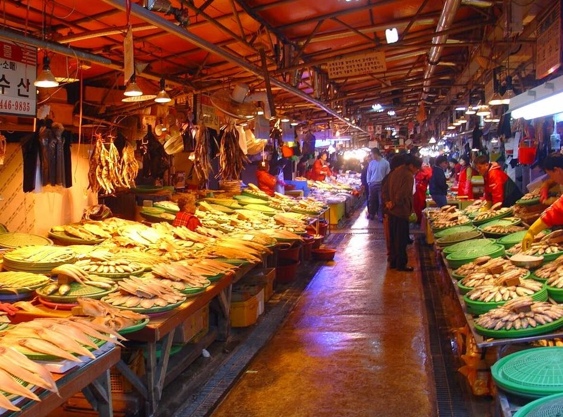
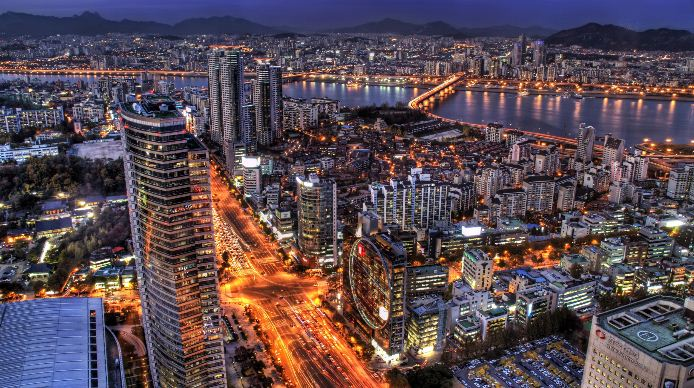
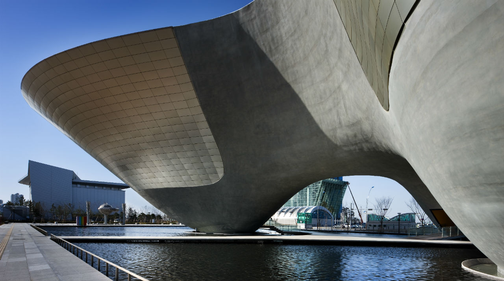
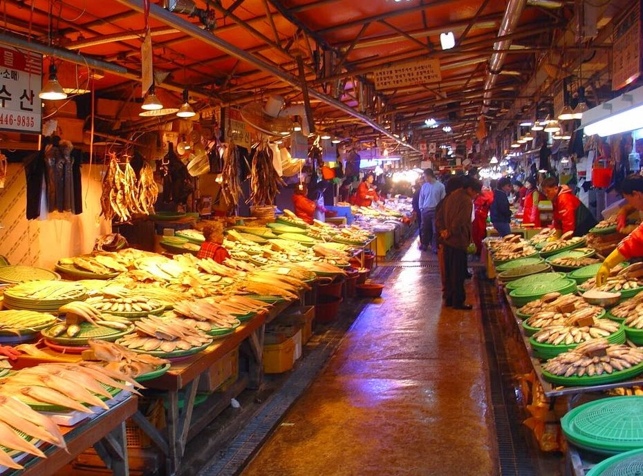
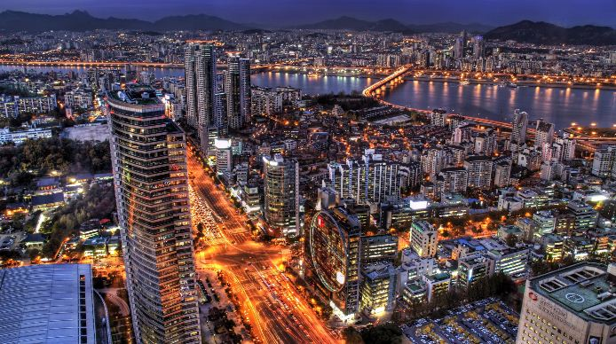
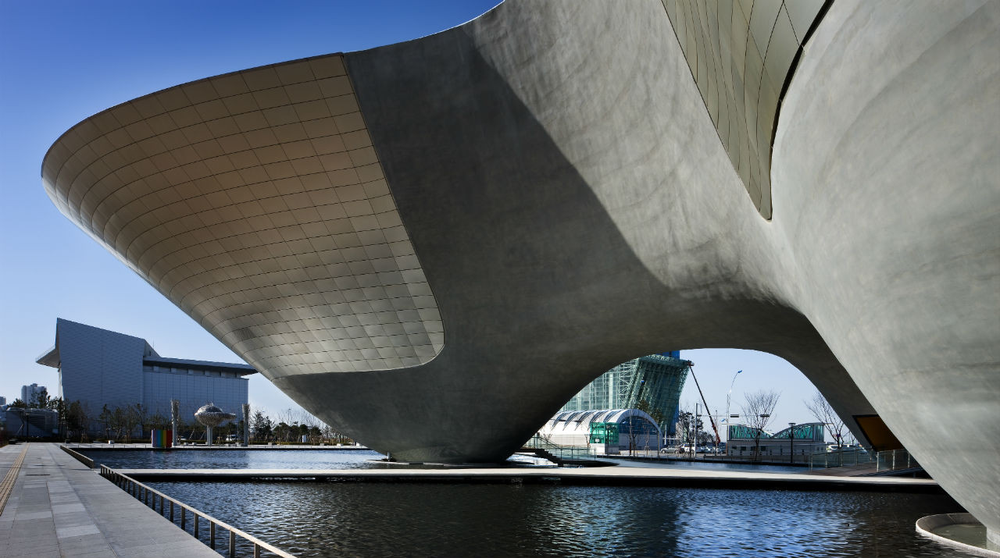
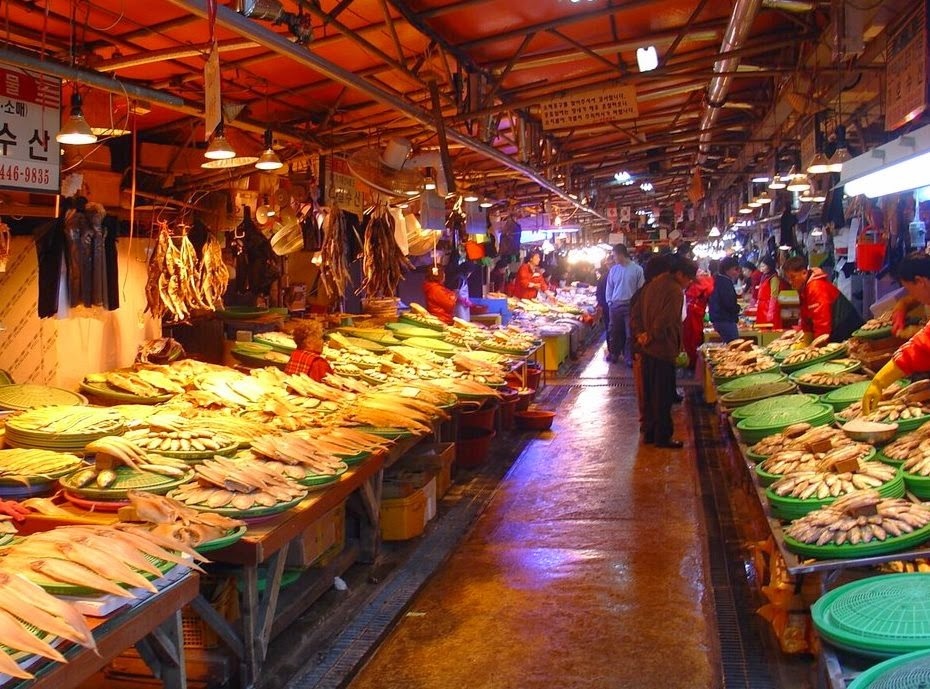
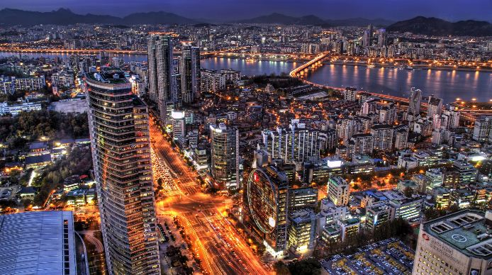
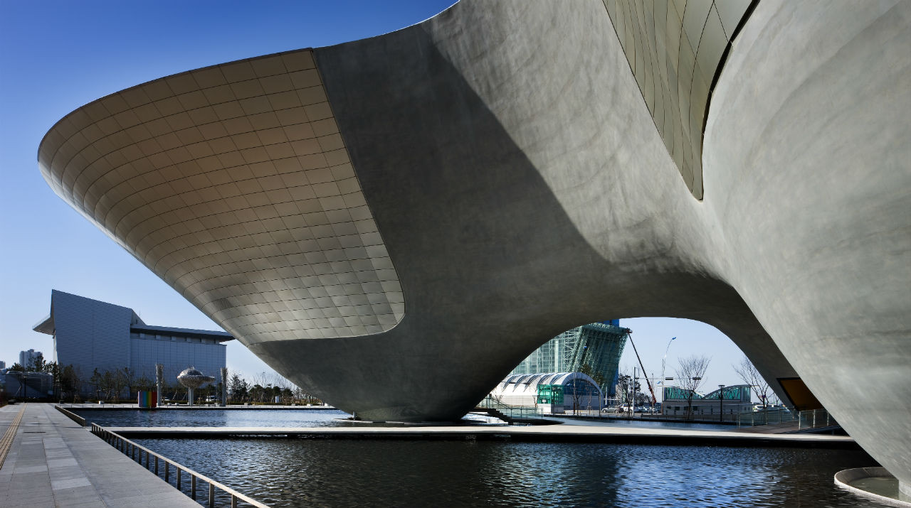
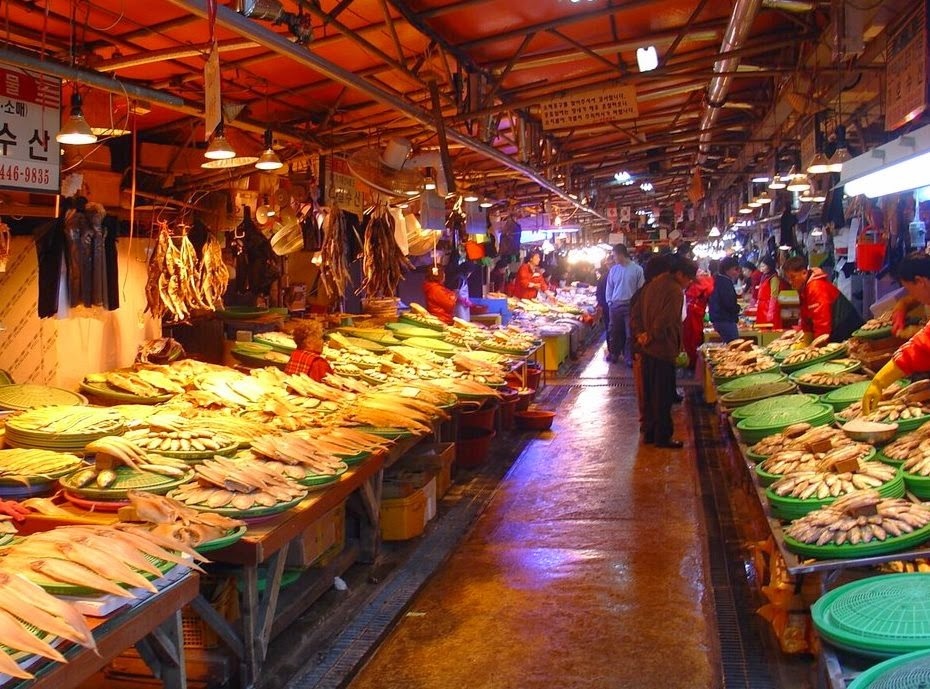
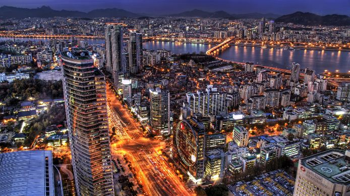
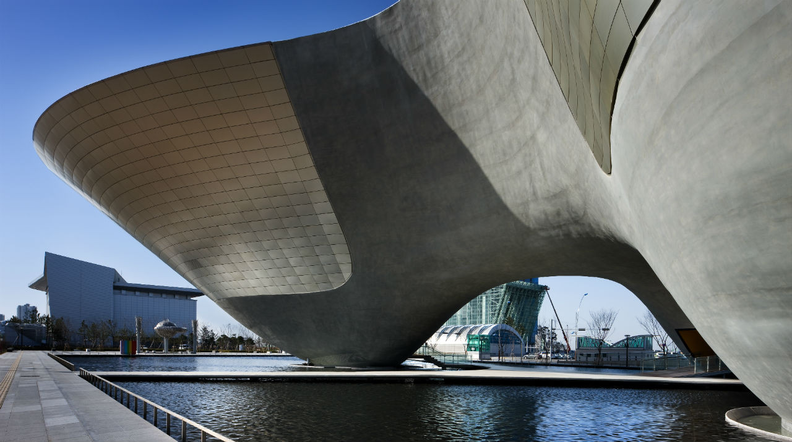
Incheon International Airport has consistently been rated one of the best airports in the world for the past decade. With fantastic restaurants, cultural performances, a spa, an ice skating rink, a movie theater and all the duty-free shopping you could ever want, it’s easy to spend an entire day here.
Incheon’s Songdo has been designated as one of the world’s first smart cities, as a number of smart technologies are heavily utilized in its infrastructure. Designed with sensors to monitor temperature, energy use and traffic flow, Songdo can essentially communicate with visitors to let them know when their bus is due or inform local authorities about any potential problems.
Located directly on the coast, it’s not surprising that Incheon boasts a lively fishing industry and offers some of the best seafood in the country. To sample it, head to the Sorae Fish Market, an expansive wet market that hasn’t changed in decades. Here, numerous vendors sell a wide variety of seafood that you can purchase and have cooked at one of the nearby restaurants.